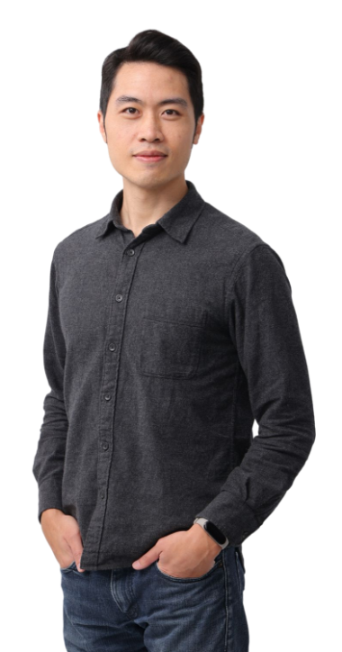
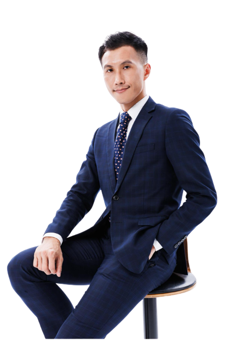
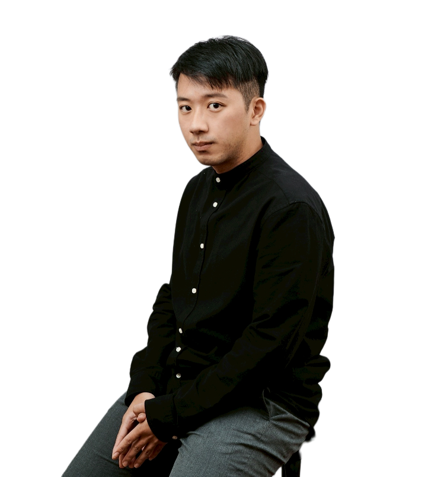

你以為你「擁有」一家公司。
其實，你只是擁有一份永遠離不開的工作。
- 你不敢放長假，因為一週不在公司就出事。
- 你不敢生病，因為很多事只有你會、只有你能拍板。
- 你的營收年年成長，但你越來越累、越來越被綁住。
- 這不是你不夠努力——剛好相反，是你太努力了，把自己變成公司裡「最貴、最不能少」的那個員工。
- 真相很殘忍：一家「離不開老闆」的公司，在買家眼裡，幾乎不值錢。
真正會賺的老闆，不只在經營公司。
他們在經營一個會被搶著買的資產。
市場上身價最高的公司，往往不是做最大的，而是「最不靠某一個人」的。因為買家買的從來不是你的辛苦，是你交出去之後、它還能穩穩賺錢的那套「系統」。這件事有個正式名字，叫「資本化」——白話講，就是把公司變成三種樣子：
你親手把公司，交到對的人手上
用一個你滿意的數字。
不是被迫收掉，不是賤價脫手，更不是硬塞給沒興趣的下一代。而是你早有準備、從容地，在你想要的時間點，把一家「體質健康、數字漂亮、別人搶著要」的公司，用一個對得起你半輩子心血的價格，交給最適合的買家。從那天起，你的選擇權，終於回到自己手上。
開始準備你的「那一天」把公司變成資產，不是單一招式。
我們把三種專業，綁成一條龍。
「可預期、可複製、可傳承」聽起來簡單，做起來牽涉三件完全不同的事：錢要說得清、人要換得掉、市場要看得見你。這就是為什麼，我們三個人，把各自最強的專業湊成同一張藍圖。
資本化顧問
把你的生意，翻譯成買家與資本市場看得懂的語言。三年財務預測、價值藍圖、目標達成率定期檢核——讓你的公司「數字會說話」。
＝ 可預期AI 技術導入顧問
用 AI 與系統，把只存在老師傅腦袋裡的 know-how，變成可複製、可量化、效率看得見的流程。從需求盤點、效益分析，到導入上線一條龍。
＝ 可複製故事行銷顧問
形象佈局、分眾傳播、專題報導、Podcast 專訪、電子報擴散——讓你的公司在市場與潛在買家眼中，從「沒聽過」變成「有份量、想認識」。
＝ 可被選擇從「不懂資本化」到「漂亮交棒」，
我們把路拆成五步。
你現在值多少?
用買家視角體檢：財務、流程、人才依賴度、市場聲量。產出「現況 vs. 落差」報告。
畫出三年增值路徑
三年財務預測 + 三情境推演，訂出每年要長到哪、補哪些洞。這是你的導航地圖。
讓公司不靠人
AI 與系統導入，把關鍵 know-how 流程化、數據化，降低「離不開老闆」的風險。
讓市場看見你
故事行銷與媒體露出，建立品牌份量與買家認知，把「無形價值」做成「有價身價」。
在對的時間，賣個好價錢
對齊潛在買家、優化交易條件，在你滿意的時間與數字，完成傳承或出售。
全程貫穿：每季 / 每半年的策略對齊會議 + 財務目標達成率檢核——確保藍圖不只是掛在牆上。
預約免費策略診斷，拿到你的第一張藍圖草稿這不是 PPT 理論。
是三位顧問打出來的實戰數字。

Eric Huang

廖亮

吳亮衡
他們曾卡在：離不開、說不清、賣不掉。
看看這張地圖，把他們帶去了哪。
- 卡在：業績碰到天花板，成長停滯。
- 我們做了：重新拆解商業模式，找到突破關鍵，結合 AI 科技強化競爭力。
- 結果：國家級創業競賽勝出，獎金投入投資與發展。
以上案例已去識別化整理，保留關鍵營運情境與成果數據。
我們是二代接班，又剛好要把原本兩家公司併成一家。企業方向、組織、既有制度全部要一起處理，可是這些事情靠家人自己講，很難客觀。財務和會計也沒有一套系統可以整合，但直接買大型 ERP 又不貼近我們的產業，大家還要重新學。
我們碰到問題，但不知道怎麼解決——這時候最需要的，是一個可信任、專業的第三方，幫我們把問題真正梳理出來。他們不只是做 AI 優化，而是從公司實際狀況出發做全盤分析；Michel 也很有耐心，一步一步陪我們把流程和現況理清楚。
我當時正在成立另一家公司，想找外部觀點來看自己的商業模式有沒有盲點。對我來說，這個計畫最大的價值，是用一筆可以負擔的費用，一次換到三個不同企業視角來看你的 business model——有點像一張門票。
以我實際付的價格來看，整體是很超值的。我自己感受最深的是故事行銷：我身邊不少朋友的公司已經過了從 0 到 1 的階段，正想從 1 走到 10，這時候最需要的不是資金或工具，而是讓市場理解自己、把品牌和商業價值放大。
我以前做手工皮件，什麼都想自己來，總覺得交給別人就做得沒我好，一直不敢放手。這次健檢最大的提醒是：一個人能做的事就是有限，公司要長大，不能只靠一個人。
我不太會講自己的想法，但透過幾次聊天式的對談，他們幫我把從做皮件、教學到想進寵物市場的脈絡整理清楚——原來我不是從零開始，過去的工藝可以直接接到新品牌上。AI 也一樣，本來覺得公司還小用不到，後來才懂有些底子得從頭慢慢累積，不能等公司大了再重來。
我們只與
「認真想做出改變」的企業主合作。
這不是因為架子大，而是因為把公司變成資產這條路，需要你一起走完。我們選擇把全部的力氣，留給真正準備好的人——所以也希望，那個人是你。
最適合與我們同行的你
- 年營收約 1，000 萬～3 億，公司已有穩定獲利。
- 心裡開始想「再過幾年，這家公司怎麼辦」。
- 願意把公司當「資產」來經營，不只是顧訂單。
- 聽得進真話，願意按部就班把藍圖走完。
我們很樂意晚點再聊，如果你…
- 公司仍在生存掙扎、現金流還沒穩定。
- 目前只想衝短期業績，還不打算動體質。
- 期待一招見效，暫時沒有投入時間的打算。
在你按下預約之前，
你大概在想這些...
越早規劃，選擇權越多。而且資本化最好的地方在於：就算最後你不賣，公司也會更賺、更輕鬆、更值錢。這是一筆穩賺的準備。
老實說，資本化這件事不挑營收規模——但我們的經驗是，年營收落在 1，000 萬到 3 億之間的企業主，跟我們合作的槓桿效益最高。這個階段，你的公司已經有體質，卻還沒被好好「定價」過，正是動手最划算的時候。
我們從小範圍試點、效益先行做起——先挑一個最有感的痛點，做出看得見的成果，再逐步擴大。不是一次砸大錢、全公司翻新。
診斷就是診斷。先讓你看清楚現況與落差;要不要合作，你看完再決定。不收費、不推銷。
不用擔心。我們做的三件事，都是所有公司的地基，跟你做哪一行關係不大：資本化把財務體質變得「可預期」、AI 把工作流程自動化「降成本」、故事行銷墊高公司在員工、投資人、客戶心中的「價值」。這三個模組對產業特殊性並不敏感。
一般情況，從第一次會議到第一份結案報告，1 個月內完成。之後我們用「代幣(token)」模式，把資源客製化配置在槓桿效益最大的任務上——確保你的每一分預算，都花在最值得的地方。
公司的價值，
不是退休那天才結算。
它從今天開始，累積，或流失。
它從今天開始，累積，或流失。
等到想退、想交棒、想賣的那一天才開始準備，往往已經來不及——買家不會等你補課，時間也不會。但如果你從現在開始，把公司一步步變成「可預期、可複製、可傳承」的資產，那一天到來時，你會是有選擇、有底氣、開得了價的那一個。第一步，只需要一場 60 分鐘的對話。
不收費、不推銷。我們一起看清楚：你的公司現在值多少、離「賣得掉的好價錢」還差哪幾步。